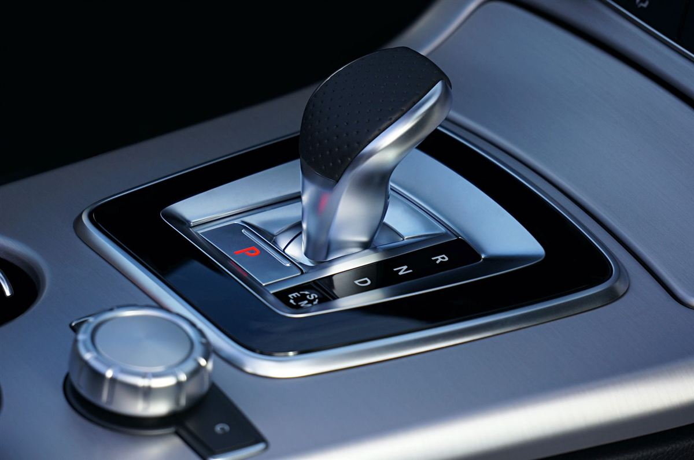

Permis B sans code — boîte automatique
899 €
- Test d'évaluation
- Accueil et constitution du dossier
- Fournitures pédagogiques (fiche de suivi, livret)
- 13 leçons d'une heure de conduite — boîte automatique
Permis B boîte automatique · Fréjus
Sans embrayage ni passage de vitesses, vous vous concentrez sur la route et sur la sécurité. Résultat : moins d'heures de conduite et un permis moins cher.

Les avantages
Nos forfaits en boîte automatique comprennent 13 leçons de conduite, contre 20 en boîte manuelle : vous gagnez du temps et de l'argent.
Libéré de l'embrayage et des rapports, vous consacrez toute votre attention à la circulation, à l'anticipation et aux autres usagers.
Les voitures électriques et la plupart des hybrides sont équipées d'une boîte automatique : votre permis vous permet de les conduire.
Bon à savoir
Un permis B obtenu en boîte automatique porte la mention code 78 : il vous autorise à conduire tous les véhicules de catégorie B équipés d'une boîte automatique.
Si vous souhaitez ensuite conduire une voiture à boîte manuelle, une formation de 7 leçons de conduite en circulation suffit pour lever le code 78, sans repasser d'examen. Nous la proposons à 425 €, accueil et constitution du dossier compris.
La boîte automatique est aussi disponible en conduite accompagnée dès 15 ans, avec un forfait à 1 165 €.
Nos forfaits
Accueil, constitution du dossier et fournitures pédagogiques compris. Tarifs TTC, effectifs au 12/04/2026.
899 €
1 049 €
1 165 €
425 €
Non compris : redevance de 30 € pour l'examen du code · leçon supplémentaire 55 € · accompagnement à l'examen de conduite 55 €. Voir tous nos tarifs →
Questions fréquentes
Comptez 899 € sans le code et 1 049 € avec le code, pour 13 leçons de conduite. En conduite accompagnée, le forfait boîte automatique est à 1 165 €.
Non : le permis porte le code 78, limité aux boîtes automatiques. Pour conduire une boîte manuelle, il suffit de suivre une formation de 7 leçons de conduite (425 €), sans repasser d'examen.
Nos forfaits comprennent 13 leçons d'une heure. Le test d'évaluation de départ permet d'ajuster ce volume à votre profil ; une leçon supplémentaire coûte 55 €.
Oui, dès 15 ans. Le forfait conduite accompagnée en boîte automatique comprend le code, 13 leçons et un rendez-vous préalable de 2 heures avec les accompagnateurs, pour 1 165 €.
Une question, un devis, une inscription : nous vous répondons rapidement.